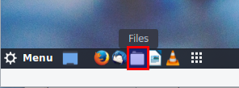
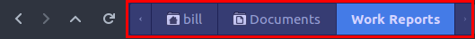
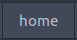
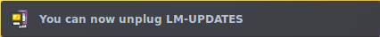
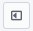
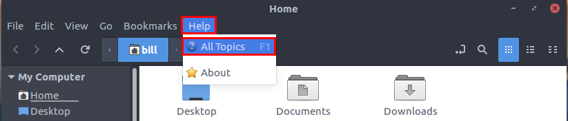

This
document is an illustrated guide that shows how to use the Nemo File
Manager to view, edit, copy, and delete the files and folders
on your Wasta Linux computer.
This
document is an illustrated guide that shows how to use the Nemo File
Manager to view, edit, copy, and delete the files and folders
on your Wasta Linux computer.
This document is designed to be a guide for all Wasta Linux users whether they are new users or experienced users. Everyone who uses a computer at some point will need to make use of a File Manager.
It makes sense:
When you want to find or view certain files and folders on your computer's
When you want to organize your files or folders by copying or moving them into folders that you create and organize
When you want to copy files or folders to and from an external memory stick or hard drive
When you want to delete files or folders, or perhaps recover previously deleted files or folders
When you want to display the contents of documents, pictures or video files
The File Manager is a computer program. The File Manager give you a view of what is inside your computer. With the File Manager you can access and explore your computer's folders and files. You can view, edit, copy, rename, and delete the files and folders on your Wasta Linux computer. Since the File Manager gives you the power to create and destroy files and folders, it is important that you know how to properly use it. The File Manager that comes with Wasta Linux is called “Nemo” but in this document we will refer to it simply as the File Manager.
The File Manager can be started or launched from:
The panel’s Files launch bar icon
The main Menu’s Accessories category
The main Menu’s Places category
Hover your mouse pointer over the icons in the launch bar located in the lower left part of your screen. When you hold your mouse pointer over the folder icon in the launch bar it says, "Files" and appears as a folder icon like this:

Click once on this "Files" launch bar item to run the File Manager program.
Another way to start the File Manager is to click on the main Menu, then on the Accessories category, and select the Files item to run the File Manager program as shown below:

A third way to start the File Manager is to select one of the main Menu’s Places as shown in the illustration below:
Selecting any one of the locations in the main Menu’s Places category (Documents, Music, Pictures, Videos, Downloads) will automatically start up the File Manager, and when it is started this way, the contents of that particular place will be displayed in the File Manager’s contents window.
After it starts, the File Manager program appears as shown in the following illustration:
Note that the File Manager window has a number of important parts. At left is the Sidebar which lists the main locations that are on, or attached to your computer. When one of those locations is highlighted, the Contents Window will display what is at that location. When File Manager starts up, it always displays the files and folders contained in the user’s Home area in the contents window. There is a Menubar near the top left, and a Navigation bar under the Menubar. There are different "views" of the information in the Sidebar and also different "views" of the items in the Contents Window - we will explain more about those views and the other parts of the File Manager later below.
The File Manager is an important tool. The more you become familiar with it and develop skill in using it, the more you will be able to make the best use of your computer. This document is designed to help you gain mastery in the use of the File Manager.
[to be written] Include Edit : Select All, Select Items Matching...
In computer talk, a file is an object on a computer that stores a document, or a picture image, or a video, or some other kind of data. For example, a document created by the LibreOffice Writer program and saved in a file with the name ‘Text Document’ would look like the image at left within the File Manager.
A computer file is usually associated with a particular kind of computer program that can create or open the file. The name of many files may have a dot followed by an abbreviation called an “extension” that designates the kind of data the file contains, or what program created the file. The name under the icon above has the extension .odt which indicates that the file contains data for a document that was created using the LibreOffice Writer program. The .odt extension is an abbreviation for “Open Document Text”.
In computer talk, folders and directories are essentially the same thing. In this document, we will always use the word ‘folder’ to refer to a special type of file that serves as a container for other files and folders. Within the File Manager program, folders are shown with an icon of a folder, and display the name of the folder below the folder, as shown at left.
Folders can contain many other folders or files. When a folder contains other folders, we could refer to the enclosing folder as a “parent folder” and any folders within it as “child folders.” Within a particular folder, every file and folder must have a unique name. That is, no two files or folders can have the same name within a given folder. A file of the same name can exist in a different folder, however. Folders make it possible to organize the files on your computer in a logical way that makes sense to you.
Note: The example icons and names shown above assume that File Manager is set to its default view, called “Icon View”. There are other views, including a “List View” that can be used within the File Manager. More information about File Manager’s different views are discussed later.
The top-level folder on your computer is your Home folder. Within File Manager, it is represented as an icon and the name "Home" that looks like the image shown here and in the File Manager image above. The Home folder is listed as the first item in the Sidebar on the left side of the File Manager. All of your computer's other folders and files are contained in your Home folder. When you highlight the Home folder by clicking the mouse pointer on it, the contents of your Home folder are shown in the right hand Contents Window of the File Manager.
The File Manager displays the name of the user in its Navigation bar alongside the home icon when the Home item is selected in the Sidebar:
In the above illustration my user name ‘bill’ is shown to the right of the home folder icon. Your user name should be shown when the File Manager is highlighting your Home folder. Each user of your computer (if it has been set up for multiple users) has a unique user name.
Within your Home folder there are several folders already provided for you as "default" folders. These are listed under your Home folder within the File Manager’s Sidebar like this:

The default folders include the following: Desktop, Documents, Music, Pictures, Videos and Downloads. Each has a small icon or picture to the left of the name of the folder. These default folders correspond to the default list of places shown in the main Menu’s Places category.
You will notice that these default folders are also shown in the right side of the File Manager (the contents window) when you highlight your Home folder in the Sidebar.
In addition to the default folders, your Home folder may also contain some other folders created automatically by some of the programs you use.

For example, the Adapt It program creates a folder called Adapt It Unicode Work which looks like the illustration at left. This folder is created by the Adapt It program. It is the main location where Adapt It stores its projects, adapted texts, exported documents and settings. You should never use the File Manager to move or change the names of this folder or other any other folder or files that Adapt It creates within the Adapt It Unicode Work folder. Adapt It will manage all the file and child folders that are located in this folder.
Here is another example of two similar folders that are created by different versions of the software program Paratext:
The Paratext8Projects folder is automatically created by version 8 of the Paratext program. The ParatextProjects folder is automatically created by version 7 and earlier versions of the Paratext program. If you have migrated any projects from Paratext version 7 to version 8, your computer will have both of these Paratext folders. Paratext creates these folders to store its projects, texts, and settings. Therefore, it is important that you not move or make changes to these folders.
WARNING: If you move or change the names of the folders automatically created by Adapt It, Paratext, or other programs, those programs will not be able to find the data they have created and they will not work correctly! You must allow automatically created folders such as these to stay in their original location, and you must not rename any folders or files located within these folders.
If you accidentally Delete a folder or file see the section below called: How to retrieve a deleted folder (or file) from the Trash folder.
If you accidentally Move a folder or file to a different folder or location, see the section below called: How to retrieve a folder (or file) that was accidentally moved to a different or unknown location, and
Warnings about double-clicking with the mouse or touchpad
You can use the File Manager to navigate around in the file system. To navigate you often need to open folders. Note: To “Highlight” something means to click once on that thing using the mouse or touchpad.
You can open a folder by doing one of the following actions:
Highlight the name of the folder in File Manager’s Sidebar. If you wish to open one of the Default folders (Desktop, Documents, Music, Pictures, Videos, or Downloads) you can simply highlight the name of the folder in File Manager’s Sidebar. The folder will immediately open and the contents of the folder will appear in the contents window.
Highlight the folder when it is visible in the contents window, and press the Enter key. The folder will open and the contents of the folder will appear in the contents window. This way of opening a folder is easier and safer for some people who find it difficult to do a double-click.
Highlight the folder when it is visible in the contents window. Then click on File Manager’s File menu and select Open. The folder will open and the contents of the folder will appear in the contents window.
Double-click on the folder when it is visible in the contents window. The folder will open and the contents of the newly opened folder will then appear in the contents window. Some people have difficulty doing a double click operation without accidentally moving the folder. Unless you have good control over the mouse or touchpad, it might be safer to use one of the other methods described above to open folders. See Warnings about double-clicking with the mouse or touchpad.
Many people are familiar with file cabinets. If you are looking in the drawer of a physical file cabinet, you might see a view of what’s contained in a part of that file cabinet’s storage area:
Similarly, if you are looking at File Manager on your computer’s screen, you might see a view of what’s contained in a particular storage area of your computer. Consider the following illustration:
The
image at left shows the drawer of a physical file cabinet called
“Work Reports” which contains separate folders for the years
2017, 2016, 2015, 2014 and 2013. The image at right shows File
Manager’s view of a folder called “Work Reports” which also
contains separate folders for the years 2017, 2016, 2015, 2014 and
2013.
Working with a physical file cabinet, it is fairly easy to open the cabinet drawer and look inside. With the drawer open you can see what folders are in the cabinet, pull out a particular folder, open it and look through the individual papers within the folder, then close the folder and physically put the folder back into the file cabinet and close the drawer. The File Manager, however, cannot show you a physical cabinet that you can open and explore in depth and manipulate its contents with your bare hands. Instead, File Manager shows you an image on a flat screen, which only represents in a graphical way what the computer has in its invisible memory. Within File Manager you can select a particular folder electronically, open it and look through the individual files or folders within the folder, then electronically close the folder and the File Manager. With a File Manager, it may be a little more difficult to perceive “where you are looking” in the file system, since the screen image is flat and you don’t as easily see the “big picture” that you see when you are looking into a physical file drawer. If he folder you have opened is empty, the contents window will also be empty.
The File Manager’s Navigation bar is a simple way of showing you where you are looking in the computer’s file system. Here is a larger image of the Navigation bar from the above File Manager image:

We will describe the use of the parts at the left end of the Navigation bar later. The important thing to understand here is how the Navigation bar helps you to know where you are looking in the computer’s file system. In the image above, pay special attention to the names shown in the right part of the Navigation bar (shown in the above illustration in the red box). The names in the bar show the path that I have taken to get to where I am currently looking. The path shows the locations from the left and proceed to the right. The left end is the starting location and the highlighted item at the right end is where I am currently looking in the file system. The highlighted item in the image above is the Work Reports folder, so that is the location where I am currently looking. The File Manager’s contents window shows me the actual contents – which may be files or folders or a mixture of both - of the Work Reports folder. The whole path (moving left to right) shows that I went from my bill user’s Home folder through the Documents folder and to the Work Reports folder to get where I am. So, then, if you are not sure what you are looking at within the File Manager, just look at the Navigation bar. The light-blue highlighted location of the bar is “where you are”.
With a little effort, you could keep a physical file cabinet and its contents of files and folders well organized by writing good names on the folder’s tabs, and by ordering the folders in a logical way within the file cabinet. Similarly, with a little effort within File Manager, you can keep your computer’s folders and files well organized, with good names on its folder icons, and a logical ordering of the folders within the file system.
Wasta Linux helps you to get started in an organized way by supplying you with a set of default folders for the general categories of Desktop, Documents, Music, Pictures, Videos and Downloads. You should build on and expand on this pattern of organization. Hopefully, this document will assist you in using File Manager to create and maintain a well-organized filing system on your computer.
As illustrated above, the Navigation bar shows you the location or path of the folders and files you are viewing in the contents window. The Navigation bar also allows you to quickly navigate to other locations in the computer’s file system.
When you use the File Manager to open folders (as shown above in the “Knowing where you are looking...” section), you have navigated along a certain path or locations to get where you are currently looking. You may wish to “go back” to one of those previous locations along the path:
The button at the left end of the Navigation bar (shown as a < in the red box above) is the “Go to the previous visited location” button. If you have visited several locations or folders pressing this button repeatedly will take you back through those previous locations. In the above illustration pressing this button once, File Manager will go back one step to the left in the path to the previously opened folder which was the Documents folder:
Note that once we have navigated to a “previous” location, the next navigation button (the > button in the bar) is now enabled. This button (in the red box of the illustration below) is the “Go to the next visited location” button:
Now a click on this > button would navigate one step back to the right in the path shown in the navigation bar. The actions of these first two buttons on the Navigation bar is very similar to the actions of the navigation buttons on most Internet web browsers, which allow you to “Go back one page” and “Go forward one page” of web sites that you have visited.
As mentioned earlier, one folder may contain contain one or more folders within it – and those contained folders may also contain more folders within them. You can think of folder like generations of families. A folder may contain one or more "child" folders. The folder that contains the child folders is called the "parent" folder. Child folders may also contain more child folders (grand-children), and so on. Any folder may also contain other kinds of files along with "child" folders.
The “child” and “parent” relationships are relative to what “generation” we are looking at. Whenever you use the File Manager to open a folder (using one of the methods of opening folders described in Opening folders section above), you change your view of the contents from a “parent” folder to what was the “child” folder. Once opened, the “child” folder becomes the new “parent” folder in the contents view, and any additional folders that are contained in that folder are now child folders – in relation to the view you have in the File Manager.
The File Manager has a navigation button (the up arrow in the red box of the illustration below) that can be used to “Go to parent folder”:
The “Go to parent folder” button shown above can be used within the File Manager to go “up” one generation and open the contents of the location which is the “parent”. In the above illustration we know we are currently looking at the contents of the Documents folder – because it is highlighted in blue on the Navigation bar. If we now click once on the “up” navigation button, The contents view will switch to viewing the contents of the parent of the Documents folder – which is user bill’s Home folder:
After you have navigated around in child and parent folders, you may want to directly look at the contents of one of the folders again that is shown on that path. For example, you may have viewed the contents of the Documents and Work Reports folders, and then navigated back up “two generations” to your Home folder. The path on the Navigation bar might then look like the following illustration:
When previously visited folders are still showing on the Navigation bar’s path, you can simply click directly on the name of a folder on that path to immediately open again that folder and view its contents. So, in the above illustration we are currently viewing the contents of bill’s Home folder, but we could click on the Work Reports name on the bar’s path to open it again, or we could click on the Documents name on the bar’s path to open it again. The path shown on the File Manager’s Navigation bar will show previously opened folders in your navigated path, but only until the File Manager program is closed. Each time File Manager is started up afresh it will not any path that you navigated in a previous session of File Manager.
There is another button on the Navigation bar that has an arrow going in a circle (see the illustration in the red box below), that can be used to have the File Manager to “Reload the current location”:

You can click the “reload” button if you think the contents view is not up-to-date in what it is showing. This situation might only happen if another program suddenly changes the contents of the folder while you are viewing it in the File Manager. That is not likely to happen, so you would rarely need to use this button, but it is there in case it is needed.
Look again at the left end of the Navigation bar. By hovering the mouse pointer over the navigation buttons there you can see a momentary “tool tip” that tells you what each button is used for. Here is a summary chart of what those navigation buttons do if you click on them:
|
Button/Symbol |
File Manager Navigation function |
|
|
Go to the previous visited location (grayed out if there is no previous location recently visited) |
|
|
Go to the next visited location (grayed out if there is no next location recently visited) |
|
|
Go to parent folder |
|
|
Reload the current location |
|
|
Go directly to <your username> Home folder – same as clicking on ‘Home’ in the Sidebar |
|

|
File System’s actual /home folder (not normally displayed in the Navigation bar unless the “Show more of the path to the left” button is clicked on – see below) |
|
|
Go to computer’s File System (not normally displayed in the Navigation bar unless the “Show more of the path to the left” button is clicked on – see below) |
|
|
Show more of the path to the left (when the File Manager window is too small to show entire path) |
|
|
Show more of the path to the right (when the File Manager window is too small to show entire path) |
As you navigate around to different child or parent folders, the path displayed at the right end of the File Manager’ Navigation bar will highlight the currently open folder, and that folder's contents will appear in the contents window of the File Manager.
When the File Manager lists or shows the name of a file such as a document, a picture, or a video, you can usually cause that file to be opened by a program that knows how to open or display it. Basically, you can open these types of files the same way that you can open a folder from within the File Manager - by doing one the following:
Highlight the document, picture or video file when it is visible in the contents window, and press the Enter key. The file will open within a program suitable for viewing and/or editing the file. This way of opening a document, picture or video file is easier and safer for some people who find it difficult to do a double-click.
Highlight the document, picture or video file when it is visible in the contents window. Then click on File Manager’s File menu and select Open. The document, picture or video file will open within a program suitable for viewing and/or editing the file.
Double-click on the document, picture or video file when it is visible in the contents window. The file will open within a program suitable for viewing and/or editing the file. Some people have difficulty doing a double click operation without accidentally moving the file. Unless you have good control over the mouse or touchpad, it might be safer to use one of the other methods described above to open document, picture or video files from within the File Manager. See Warnings about double-clicking with the mouse or touchpad.
For example, I would like to display a photo that is contained in a folder named Gardening within my Pictures folder. I run the File Manager, click on the Pictures folder in the File Manager’s Sidebar. Then I click on the Gardening folder and press the Enter key to open the Gardening folder. At this point the File Manager looks like this illustration:
The contents window shows two photo files that came from my camera: P1000953.JPG and P1000954.JPG. I want to display the photo using Wasta’s Image Viewer program. As indicated in the illustration, I can click once on the JPG image I want to display, then press the Enter key. The image will open within Wasta’s Image Viewer program:
Note: I could have used any one of the three methods for opening a picture file described in the section above called “Displaying the contents of documents, pictures or video files from within the File Manager”.
Opening a document or a video file from within the File Manager works the same way. Most documents will open within the LibreOffice Writer program. Videos and other media files will open within the VLC Media Player program.
The types of files that can be opened or displayed this way include .jpg, .png, .txt, .odt, .doc, .htm, .html and some other types. If the file does not open or does not display well using the above techniques, you may need to open the file within the program that created it.
Note: You should not try to open .xml adaptation documents that are stored within an Adapt It project's "Adaptations" folder using the above techniques. The files may be displayed, but they won't make much sense. They should be opened instead from within the Adapt It program.
Use the File Manager to show the contents of a USB memory stick or external USB drive plugged into your computer. If the File Manager is not running, start File Manager using the "Files" launcher in the launch bar.
With File Manager up and running, plug in the memory stick or USB external drive into the Wasta computer. You should notice the name of the device appear under the Devices list. Click on the name of the USB memory stick in the Devices list. File Manager should show the contents of the memory stick in its contents window, similar to the example shown in the following illustration:
In the illustration above we plugged in a memory stick used for making backups of your work files using the Wasta-Backup program. The memory stick was previously given the label name: USB_BACKUP, but your backup device may appear with a different name in the Devices list. If you see a wasta-backup folder in the contents window, that is a sure sign that the memory stick or external hard drive has been used to backup the data from this computer (or another computer) using the Wasta-Backup program. There may also be other files on the memory stick or external drive (as illustrated above where there is a document file called “Test Document.odt” - created by LibreOffice Writer).
Notes of Caution:
You should never change the name of the wasta-backup folder or make any changes to the files and other folders that are contained in that folder. The Wasta-Backup program depends on what is in the wasta-backup folder and controls what is placed in it. If you change the name of the wasta-backup folder, or make changes to its contents, you may not be able to access your backed up data, nor restore data from your backups if you ever need to do so.
Reserve your backup memory stick for the purpose of backing up your important work with the Wasta-Backup program. Generally, you should NOT use your data backup memory stick for storing large files like pictures or videos. Pictures and especially videos take up a tremendous amount of storage space, and can quickly use up all the available space on the device. You don’t want your backup memory stick to run out of space!
If you have a memory stick that can be used for general data storage or the temporary transfer of files between computers, you should feel free to use the procedures in this document to navigate around within the folders and files, copy files to and from it, delete files from it, and so on.
While a memory stick is connected to your Wasta computer you will see it listed under Devices in the Sidebar similar to the following illustration:
In
the image shown above, the device that is plugged in is named
"USB_BACKUP". Your memory stick will probably have a
different name/label. When you have finished using the memory stick
(or an external USB drive), you should take special action to “safely
remove it” before physically pulling it out of your computer.
Note the small round icon that is located to the right of the
device name in the red box of the above image. Here is a larger view:
Within the File Manager, this icon appears at the right side of a plugged in device to indicate that the device is “mounted” in the file system of the computer. It also functions as the "Safely Remove" button. Before unplugging any USB device that stores information, you should always click on this "Safely Remove button.
When that little small round icon disappears after clicking on it, you know it is safe to remove the USB device. You may also see a message on your screen that says:

If the computer is busy copying data from, or writing data to the device, it will tell you it is busy – you should wait until it is finished:
If you see this Volume is busy notice, wait a reasonable amount of time for any copying actions to complete. If you have opened a file on the USB drive within another program, you should first close it from within that other program, then attempt to do the “safely remove” action again. If the Volume is busy notice keeps appearing - even after doing these things - you can click on the Unmount Anyway button. If you have to click on the Unmount Anyway button, you should check to see it any copy operation that you started completed successfully.
There are times when you may want to copy folders or files to a different location on your computer, to an external USB flash drive, or to another computer.
Open the File Manager (“Files”) and navigate to the folder or file that you want to copy.
Click once on the name of the “source” folder or file you want to copy - to highlight it.
Do one of the
following Copy actions - to place a copy of the source folder
or file in the computer’s memory (clipboard):
* Click on the
File Manager's “Edit”
menu, and select the “Copy”
menu item, or
* Right-click on the selected folder or
file, and select the “Copy” menu item, or
* Hold
down the Ctrl key and press the C key (Ctrl+C
keyboard shortcut).
Plug in the USB device - if the copy is to be made to that device.
Navigate to the destination folder or device that is to receive the copy. If it is a folder select it and press Enter to open the folder. If it is a device, select the device in the Devices group of the File Manager, and navigate to an appropriate destination folder on that device, select the destination folder and press Enter to open it (or, you can create a new destination folder on that device if needed - see below).
Do one of the
following Paste actions - to paste the source file or folder
from the computer’s memory (clipboard) to the destination
location:
* Click on the File Manager’s “Edit”
menu, and select the “Paste”
menu item, or
* Right-click on an empty part of the
destination folder’s contents window, and select
the “Paste” menu item, or
* Hold down the Ctrl key
and press the V key (Ctrl+V keyboard shortcut).
The folder or file will be pasted (copied) into the destination folder. Since you have done a copy operation the folder or file will now exist in both its original location and in the destination location.
Notes:
For many common computer procedures, there are many different ways to do the same thing. Steps 3 and 6 above illustrate this general principle: You can often use a program menu command, a right-click menu command, or a keyboard shortcut, to do the same thing. As you gain skill, you can decide which way works best for you.
There are other ways to copy folders or files (involving dragging with a mouse while holding down a special key), but those techniques are more dangerous, so they will not be described in this document.
To illustrate the steps, we will copy the “2017” folder that is located in the “Work Reports” folder which is in turn located in the Documents folder on our computer – copying it into an empty “Work Reports” folder that is located on an external memory stick device called KINGSTON.
In File Manager we click on the Documents folder in the Sidebar. Then we select the Work Reports folder and press Enter to open it. Within that folder is the folder named 2017 among other folders. We click on the 2017 folder once to highlight it. Then we execute the File Manager menu command Edit : Copy while the folder is highlighted:
(Alternatively, you could use one of the other Copy actions: Right-click+Copy, or Ctrl+C).
Then we navigate to the destination where we want the copy to go. In this case we want the copy to be made to an empty folder which is also named “Work Reports” on a KINGSTON USB memory stick. So we plug in the memory stick called “KINGSTON”. It appears in the Devices list:
We click on the KINGSTON device name in File Manager’s Devices list, to highlight it, and show the memory stick’s contents in the File Manager’s contents window. The KINGSTON USB device has a Work Reports folder in it. We click on the Work Reports folder to select it (and notice it has 0 items) as shown in the illustration below:
We press the Enter key to open the selected Work Reports folder (or double-click on it) :
Now, with the File Manager’s contents window open to the Work Reports destination folder (which is empty, as illustrated above), we complete the copy operation by executing the File Manager’s menu command Edit : Paste - while the destination folder is open in the contents window:
(Alternatively, you could use one of the other Paste actions: Right-click+Paste, or Ctrl+V).
The folder named “2017” has now been “pasted” (copied) into the “Work Reports” folder on the KINGSTON memory stick as illustrated below:
The same process, as described above, can be used to copy folders or files to other destinations on your computer, or to transfer the files to a different computer.
For example, to transfer a copy of the 2017 folder that now resides on the memory stick to a different computer, you would use a similar - but reverse - procedure on that other computer:
Plug the memory stick containing the 2017 folder you want to copy, into the other computer
On that other computer navigate to the Work Reports folder on the KINGSTON memory stick
Select the 2017 folder
Execute the Edit : Copy command (or Right-click+Copy, or Ctrl+C)
Navigate to a destination folder on that other computer
Execute the Edit : Paste command (or Right-click+Paste, or Ctrl+V)
There are times when you may want to create, rename, delete, or move folders or files that exist on your computer.
You can create new folders to keep your documents, pictures, videos, and other data organized. Folders can be created inside of other folders – to make child folders within parent folders. To create a folder, do the following steps:
Open the File Manager (“Files”) and decide where to create the new folder. You will create a new folder inside of some existing "parent" folder. Often you will create a new folder inside one of the default parent folders named Documents, Pictures, or Videos. Select one of these big category folders in the File Manager’s Sidebar.
If the parent folder for the new folder is not yet visible in the contents window, navigate to the parent folder in File Manager and open the parent folder that will hold the new child folder you are creating (see the “Opening Folders” section above).
Do one of the
following Create actions:
* Click on the File Manager's
“File” menu, and
select the “Create New Folder”
menu item, or
* Right-click on an empty part of the
contents window, and select the “Create New Folder” menu
item, or
* Hold down both the Ctrl and Shift keys
and press the N key (Ctrl+Shift+N shortcut).
A new folder edit box opens that has the name "Untitled Folder" highlighted in the edit box. Type the name you want the new folder to have - overwriting the "Untitled Folder" name, and press Enter when done. If the name turns out to be wrong you can rename it, or delete it (see below).
To rename an existing folder or file, do the following steps:
Open the File Manager (“Files”) and navigate to the folder or file whose name you want to change.
Click once on the name of the folder or file to highlight it.
Do one of the
following Rename actions:
* Click on the File Manager's
“Edit” menu, and
select the “Rename...”
menu item, or
* Right-click on the folder or file
and select the “Rename...” menu item, or
* Press the
F2 function key (F2 shortcut).
An edit box opens over the existing name of the folder or file - highlighted in the edit box. Type the name you want the new folder or file to have overwriting the existing name, and press Enter when done. If the name turns out to be wrong you can try renaming it again by starting with step 2 above.
To delete a folder or file, do the following steps:
Open the File Manager (“Files”) and navigate to the folder or file that you want to delete.
Highlight the folder or file you want to delete.
Pause and make sure that you really want to delete the folder or file. You may want to open the folder or file to make sure that its content is something you no longer want to be kept. Never delete a folder that was created as a data storage area by a program such as Adapt It or Paratext – never delete the Adapt It Unicode Work folder or the ParatextProjects or the Paratext8Projects folders.
When you are sure
you want to delete it, do one of the following Delete actions:
*
Click on the File Manager’s “Edit” menu and select the
“Move to Trash” menu item, or
* Right-click
on the folder or file and select the “Move to Trash” menu
item, or
* Tap the Delete key - once only!
The folder or file will disappear from the contents window view.
Notes:
When you use the Delete key to delete a folder or file inside the File Manager, the deleted item is normally moved to the Trash folder – just like when using one of the other Delete actions. See the section If you accidentally Delete a file or folder below for how to retrieve a deleted folder or file from the Trash.
Be very careful with the Delete key as it is easy to accidentally delete a folder or a file that should be kept. If you cannot find a file in the location you expected it to be, check for it in the Trash bin.
Moving a folder is a two-part process. First we tell the computer that we want to “Cut” the folder or file from one (source) location, and then we tell the computer that we want to “Paste” it into a different (destination) location. To move a folder, do the following steps:
Open the File Manager (“Files”) and navigate to the source folder or file that you want to move.
Highlight the source folder or file you want to move.
Pause and make sure that you really want to move the folder or file. You may want to open the folder or file first to make sure that its content is something you no longer want to be kept. Never move a folder that was created as a data storage area by a program such as Adapt It or Paratext – never move the Adapt It Unicode Work folder or the ParatextProjects or the Paratext8Projects folders.
When
you are sure you want to move it, do
one of the following Cut actions:
*
Click on the File Manager’s “Edit”
menu and select the “Cut”
menu item, or
* Right-click
on the folder or file and select the “Cut”
menu item, or
* Hold
down the Ctrl key
and press the X key
(Ctrl+X
shortcut).
Note: The
folder or file does not immediately disappear from
the contents window. The
Cut action is not completed
until the subsequent Paste action is done in step 6 below.
Navigate to a destination folder (on this computer or on a USB memory stick), and open that destination folder, so that its contents are showing in File Manager’s contents window.
Do
one of the following Paste actions:
*
Click on the File Manager’s “Edit”
menu, and select the "Paste"
menu item, or
* Right-click
on an empty part of the destination folder’s contents
window, and select the “Paste”
menu item, or
* Hold down the Ctrl
key and press the V
key (Ctrl+V keyboard
shortcut).
The folder or file then really disappears (is “cut”) from its source location, and appears (when “pasted”) at the destination location where you executed the Paste action.
Note:
For many common computer procedures, there are many different ways to do the same thing. Steps 4 and 6 above illustrate this general principle: You can often use a program menu command, a right-click menu command, or a keyboard shortcut, to do the same thing. As you gain skill, you can decide which way works best for you.
There are other ways to move folders or files (involving dragging with a mouse while holding down a special key), but those techniques are more dangerous, so they will not be described in this document.
To illustrate the procedures that were summarized above, we will navigate to an existing folder called Work Reports, and open that folder. Within the Work Reports folder we will create a new folder called 2019 and another accidentally created folder called Untitled Folder. Within the Work Reports folder we will also create a Writer document called January 2019 Work Report.odt. To correct our dates, we will rename the 2019 folder to 2018 and rename the Writer document to January 2018 Work Report.odt. Then, to clean up our Work Reports folder, we will delete the accidentally created folder called Untitled Folder. Finally, we realize that the January 2018 Work Report.odt document should be located inside the 2018 folder, so we move the January 2018 Work Report.odt document into that 2018 folder.
We run File Manager and we click on Documents in the Sidebar to show the contents of the Documents folder. We highlight the Work Reports folder and press Enter to open it. File Manager now shows the various child folders named for the years 2013, 2014, 2015, 2016, and 2017 as shown in the illustration below:
For illustration purposes we want to create a new folder called 2019 and another accidentally created folder called Untitled Folder. With the Work Reports folder open we click on the File Manager's “File” menu, and select the “Create New Folder” menu item as shown below:
(Alternatively, you can use Right-click+Create New Folder, or the Shift+Ctrl+N shortcut key).
The File Manager makes a new folder icon and provides the name Untitled Folder as shown below:
I accidentally click outside the new folder’s edit box. Since I didn’t immediately change the name, the name of the new folder becomes Untitled Folder. Later I’ll delete that accidentally created folder, but before I do that I click again on the File Manager's “File” menu, and select the “Create New Folder” menu item. (or use Right-click+Create New Folder, or Shift-Ctrl+N). This time I immediately type the new name 2019 into the edit box under the folder as shown in the illustration below:
And I end my edit of the name by pressing the Enter key. The File Manager now shows the contents with the folders sorted alphabetically with the new 2019 folder I just created highlighted, and the accidentally created folder called Untitled Folder there, as shown below:
I am in a bit of a hurry, so I decide to go ahead and create a new Writer document for my January work report, and save that report into the Work Reports folder naming it January 2019 Work Report.odt. I won’t illustrate the work done in Writer here, but after that file was created and saved within Writer, the File Manager shows that the contents of the Work Reports folder now look like this:
Looking at the contents of my Work Reports folder above, I realize that in my haste I’ve created a bit of an organizational mess. For some reason I thought of the year as 2019 instead of 2018, so I incorrectly named the new folder 2019 when it should have been named 2018. I also still have the accidentally created Untitled Folder there that serves no useful purpose. Moreover, I got the date of the Writer document wrong too. It should have been named January 2018 Work Report.odt. Finally, that work report document for January was saved in the overall Work Reports folder. It should have been saved from Writer directly into the folder that should have been named 2018. What to do?
First, let’s rename the folder 2019 to 2018. Click on the 2019 folder to highlight it, then Click on File Manager’s Edit menu and select Rename… (Alternatively, you can use Right-click+Rename…, or the F2 shortcut key). Rename the 2019 folder to 2018 as shown below:

Then press the Enter key to complete the rename process. Next we can do the same rename process for the January 2019 Work Report.odt file renaming it to January 2018 Work Report.odt shown below:
Next, we will delete the accidentally created folder called Untitled Folder. Click on the Untitled Folder to highlight it. Then click on File Manager’s Edit menu and select Move to Trash. (Alternatively, you can use Right-click+Move to Trash, or the Delete key). The useless Untitled Folder disappears from the contents window which now looks like this:
Things are looking better. The last thing we need to do is to move the Writer document January 2018 Work Report.odt into the 2018 folder where it belongs. First, we click on the January 2018 Work Report.odt file to highlight it as shown below:
With the Writer document highlighted, click on File Manager’s Edit menu and select Cut as shown below:
(Alternatively, you can use Right-click+Cut, or the Ctrl+X shortcut key).
You don’t see anything happen immediately, except that the status line at the bottom of File Manager now says: “January 2018 Work Report.odt” will be moved if you select the Paste command indicating that File Manager is now waiting for us to do the “Paste” part of the move operation.
Next we navigate to the desired destination for the other part of the move operation. Our destination is the folder named 2018. Click on the 2018 folder in the contents window to highlight it, and press the Enter key (or double-click it) to open it. The File Manager should appear like this illustration:
The folder is currently empty so nothing appears in the content window. But, we note that the path in the Navigation bar confirms that we are looking in the folder named 2018. This is where we want to “paste” the document we are moving. Click on File Manager’s Edit menu and select Paste:
(Alternatively, you can use Right-click+Paste, or the Ctrl+V shortcut key).
Now click on the Work Reports part of the path in the Navigation bar, to go immediately to that folder. We now see that our Work Reports folder is nicely organized:
If you accidentally Delete or Move a folder, or a file, and you realize it right after you did it, you should immediately select Undo ... in the File Manager's Edit menu (or use the Ctrl+Z shortcut) to Undo any accidental changes. For example, if you accidentally deleted a file or a folder, you can click on Undo Trash on the Edit menu:
If it has been some time since you accidentally deleted a file or a folder, the Undo… option may no longer be available on the File Manager’s Edit menu. All is not lost, however. When files or folders are deleted on your Linux system, the system doesn’t remove them entirely, it actually moves deleted items to a special holding folder called Trash. So, for example, let’s say you accidentally deleted your Adapt It Unicode Work folder in a previous work session, but you didn’t notice that it had been deleted until now. As soon as you notice your mistake, you should select the Trash folder in the File Manager’s Sidebar as shown in the illustration below:
If you see the deleted item in the Trash holding folder, there is a good chance you can restore it to its original location if you need to. Select the deleted item to highlight it – in this case we click on the Adapt It Unicode Work folder to highlight it:
Then, with the item highlighted, click on the Restore Selected Items button at the top of the Trash folder’s contents window as shown above. The trashed item will disappear from the Trash holding folder, and be restored to its original location. You should verify that it has been restored by navigating back to the Home folder. The Adapt It Unicode Work folder should now be restored to its original location in the Home folder.
Note: You will notice that there is also an Empty Trash button at the top of the contents window when looking at the special Trash folder. If the Wasta system gives you a notice that you are getting low on disk storage space, or you would like to remove all items permanently from the Trash folder, you can click the Empty Trash button. Be cautious, however, because after you press the Empty Trash button, all deleted items will be gone forever.
The restoration process is similar if you accidentally move a folder from one place to another place. This can happen if you are not careful doing a double-click while attempting to open the folder. For example, if you accidentally moved a file or folder, you can click on Undo Move on the Edit menu:

If you have made any change to Adapt It's or Paratext's folders and cannot Undo those changes, you should "Restore" the folder you changed using the Wasta-Backup program's Restore function.
To the right of File Manager’s Navigation bar is a View-Search bar that looks like this:
Each of the icons in the View-Search bar have a purpose which we will discuss and illustrate below.
The last three icons we will discuss first. They control how File Manager presents files and folders in its content window – your “view” of the data in the content window.
The default view is the Icon View which is highlighted in light blue color in the illustration of the View-Search bar above, and the view you’ve seen in the screen shot illustrations in this document. File Manager will keep using the Icon View unless you change the Default View to one of the other two views in File Manager’s Preferences (see Appendix). You can temporarily change the view to List View or Compact View by clicking on one of the later two icons shown in the View-Search bar image above. The Icon View the largest icons (and thumbnail images of photo files), but it does not show any information about the size, type, or date modified information. The Icon View of the Work Reports folder’s contents looks like this:
The List View is the view that shows the most detailed information about the individual folders and files shown in the contents window – including the Name, Size (number of items in a folder; size of a file), Type, Date Modified, and the ability to display the “parent-child” relationships. The List View of the Work Reports folder’s contents looks like this:
Wasta Linux users who have used since version Wasta 12.04, may be accustomed to seeing the List View within the File Manager, since List View was the default view in some earlier versions of Wasta. Some regional customizations of Wasta Linux may also have set the default view for File Manager to be the List View. For these reasons this documentation will cover some of the extra features of List View in more detail here within the discussion of the List View.
First, you need to know how you can change the default view for the contents window in File Manager.
The default view in File Manager is determined by a setting in the Preferences dialog. To access the Preferences dialog click on File Manager’s Edit menu and select Preferences as shown below:
The Preferences dialog appears which looks like this:
As you can see from the illustration above, the Preferences dialog actually has a number of other settings that can be changed. There are six “tabs” of information listed along the top of the Preferences dialog: Views, Behavior, Display, List Columns, Preview, and Toolbar. Each of those tabs has a page of options that can be changed – according to your preferences. Changing the Default View from Icon View to List View is the only preference option that we will cover in this documentation. You might like to make some other preference changes – especially after you have developed some skill in using the File Manager.
To change the Default View, click on the drop down arrow of the ‘View new folders using’ list box, and select the List View option as shown below:
Then click on Close at the bottom right of the Preferences dialog. The change is not made immediately, but will happen the next time that you run the File Manager. It will use the List View as its new default view from this time onward – unless, of course, you later change the default view back to Icon View or Compact View - using this same Preferences dialog. Below we illustrate some of the features of the List View.
In List View, each folder that has some kind of content (at least one file of some kind, or a child folder) will have a little right-pointing wedge showing next to the folder’s name as shown below:
The illustration above shows the Home folder in List View. Note that the Documents folder, the Downloads folder, and the Pictures folder have a little gray right-pointing wedge on the left side of the Documents icon. Enlarged, the wedge beside the Documents folder looks like this:
You
can list the contents of a folder by clicking on the little
right-pointing wedge that is shown next to the folder name. This
lists the contents of the folder below the folder and indented a
little to the right – without making the contents of the folder
occupy the entire contents window. This can help you see the big
picture of your folder’s parent-child relationships. Here is a
simple illustration of what our Home folder looks like with the
wedges activated so that the contents of the Documents folder is
listed below it, and the contents of the Work Reports folder is
listed below it – without losing the overall view of the folder’s
parent-child relationships:
In the illustration above, the Documents folder’s wedge was clicked/opened to reveal that it has a child folder called Work Reports. The Work Reports folder’s wedge was also clicked/opened to reveal that is has 6 child folders named 2013, 2014, 2015, 2016, 2017 and 2018. Each of these 6 year folders also have some content (the Size column indicates the first 5 have 12 items, and the 2018 folder has just 1 item). If we clicked on the wedge next to the 2018 folder we would see that the item it contains is a Writer document called “January 2018 Work Report.odt” as shown in the partial contents window shot below:
The List View shows shows helpful information for files. In the shot above we see that the January 2018 Work Report.odt document is 9.6kB in size, and it was created or last modified on 2017-10-05. It is a template document that is now ready to fill in when I am ready to complete my work report at the end of January 2018. When I have filled in the details of my work for that month, and Save my edits of the file at the end of January 2018, the size will get much larger and date modified will show the logical date the report was completed.
Note that the little gray wedges act like toggles – opening and closing the folder’s contents list. When the wedge is pointing to the right, the folder beside it is “closed” and its contents are not listed in the List View. One click on the wedge toggles it to an “open” state and the wedge points down – at the list of items the folder contains. A second click on a downward pointing wedge, and it toggles it back to its “closed” state and the folder’s contents again disappears from the List View. If a folder is actually empty, toggling the wedge (if it has a wedge) will show “(Empty)” under the folder.
With time you may create many folders within other folders, and with some care, you can keep your files and folders organized in a way that makes sense to you. The List View can help you “see the big picture” as you add more and more parent-child folders in organizing your data.
When the File Manager is set to "List View" (see above), the top of the main window displays this bar that is divided into 4 column headings: Name, Size, Type, and Date Modified. The header bar looks like this:
The headers you see in the image above only appear in the "List View". This view displays some helpful information about the folders and files that are listed under the headings. There are 4 default headers in List View: Name, Size, Type and Date Modified. These are the default headers. (which headers are shown in List View can be set in the List Columns tab of the Preferences dialog accessed from the File Manager’s Edit menu). Each of the headers can be used to sort the order of the items that appear in List View, as described below.
In the illustration above, the down arrow at the right end of the Name column heading, indicates that the sort order of the listed items is determined by the item’s Name. The direction the arrow is pointing also provides more information about the sort order. In the illustration below the arrow is pointing down, indicating that the sort’s “reading order” goes downward – that is, as you move down the list you advance through the alphabetical order – sorted by the item’s Name as shown by the direction of the arrow in the red box below:
The sort order in List View will be changed if you click directly on the header. Each click on a header will reverse the sort order based on that header. For example, if you click on the Name header segment of the bar, the folders and files will be sorted in reverse alphabetical order (bottom of the alphabet at the top). The direction of the little arrow will then point up instead of down as shown below:
Sorting for a given column works like a toggle. If you click the Name header segment of the bar another time, the folders and files will be sorted back in normal alphabetical order (top of the alphabet at the top).
Hint: If you notice that the contents seem to be sorting strangely you may have accidentally clicked on one of the headers while attempting to select one of the top items in the List View. If that happens, just click once or twice on the header you want items in the list to sort by – watching the direction of the little arrow that indicates the sort direction. When the arrow points down the end of the alphabet is downward; when the arrow points up, the end of the alphabet is upward.
If you click on the Size header segment of the bar, the folders and files will be sorted according to their size, from smallest to largest. (the little arrow will appear next to the Size header and initially point down):
A second click on the Size segment will sort the folders and files from largest to smallest (with the arrow pointing up):
If you want to return to viewing the files sorted by Name rather than Size just click on the Name segment of the header bar.
If you click on the Type header segment of the bar, the folders and files will be sorted according to their type - sorting them alphabetically by their extension (the little arrow will appear next to the Type header and initially point down):
A second click on the Type header segment will reverse the order - but still using the extension to sort by rather than the name (with the arrow pointing up):
If you want to view the files sorted by Name rather than by Type just click on the Name segment of the header bar.
Finally, if you click on the Date Modified segment of the bar, the folders and files will be sorted according to the date they were last modified - from newest to oldest (the little arrow will appear next to the Date Modified and initially pointing down):
A second click on the Date Modified header segment will reverse the order - from oldest to newest (with the arrow pointing up):
Each additional click on Date Modified reverses the sort order by dates. If you want to view the files sorted by Name rather than by Date Modified just click on the Name segment of the header bar.
The Compact View is the view that can show the most files and folders at once. It uses multiple columns to display its information. This view uses smaller icons that Icon View, but otherwise it shows the same amount of information as the Icon View. The Compact View of the Work Reports folder’s contents looks like this:
The Compact View can be helpful when viewing a folder with many files or folders visible at the same time in the contents window. (In the above illustration I temporarily added 12 additional year folders to show how they sort and flow into columns in the Compact View.) However, you probably would only want to use it temporarily, and then switch back to a more informative view.
The first button in the View-Search bar looks like this:
This button acts as a toggle button. If we have the Work Reports folder open in the File Manager the path in the Navigation bar normally would look something like this:
By clicking on the Path toggle button in the View-Search bar, the named path shown in the red box in the image above changes to show its actual path in the Linux file system, as shown in the illustration below:

This view can be helpful for Wasta users who are familiar and comfortable working directly with the Linux file system. Clicking on the button again will toggle the path back to its normal form.
The second button in the View-Search bar looks like this:
This Search button can be very handy, especially when you have many folders and files on your system. It is helpful to switch to List View before using this Search button. When you click on this button, File Manager opens a Search bar as shown (in the red box) below:
In the illustration above, File Manager has opened the Work Reports folder and is displaying the contents of the Work Reports folder. Our view has been switched to List View. We see that the Work Reports folder has 6 child folders (and since we are in List View) we can easily see that those 6 folders contain some items within them. They all have wedges to the left of their folder names, and the Size column tells us that there are items within each of the year folders.
Now, lets say I would like to search for reports that have the word January in their document names. With the Search bar’s box open, I type the word January into that box. Immediately, File Manager starts searching as I type. It finds that there is a document with January in its name in each of the year-named folders. Here is the search result:
The Search operation found 6 Writer documents each having the word January in their names – one in each of the 6 year folders. In addition to showing us their Name, having List View enabled, the search results also show us the documents’ Size, Type, and most helpful their Location. If we wanted to open any of these documents to see the actual reports, all we need to do is one of the following Opening actions:
Click on their name and the click on File : Open With LibreOffice Writer, or
Click on their name and press the Enter key, or
Click on their name and use the Ctrl+O shortcut key command, or
Double-click on the name
Notes:
The Search bar acts like a filter. It looks through all your files and filters out any the don’t meet the search criteria, and just shows you the list of files that match the search criteria. For more detailed search you can click on the Plus button at the right end of the Search bar to add more search criteria. Click on the All Files button to start a new search.
You can use the Search function with Icon View selected. It will still find all 6 of the Writer documents with January in their names. It just won’t show you their Size, Type, and Location.
|
|
Path/Location button. This tool bar button acts like a toggle. Click it once to see the actual Linux file system location that is being pointed to in the File Manager. Click it again to go back to the normal state which shows a graphical picture of the path to the location being being pointed to in the File Manager. Hovering the mouse pointer over this button it says, "Toggle Location Entry". |
|
|
Search button. This tool bar button acts like a toggle. Click it once to open a special Search bar under the File Manager's tool bar. You can then type a word or phrase and click Enter to search your computer for a file or folder that matches the name you enter. You can enter just part of the name if you can't remember the whole name. It can be any part of the name. When the search results appear you can refine your search by having it search for certain file types or in certain locations. Hovering the mouse pointer over this button it says, “Search documents and folders by name”. |
|
|
This sets the Icon View. This tool bar button sets the view for the main window that displays files and folders in the File Manager, so that it shows only an icon and name representing the folder or file. In this view the folders and files are arranged in order in rows across the screen. This view doesn't show any information about the folder's contents or about a file's size, type or date the file was modified. This is the default view in recent versions of Wasta Linux. |
|
|
This sets the List View. This tool bar button sets the view for the main window that displays files and folders in the File Manager, so that it shows folders and files in a vertical list with information about each file in columns out to the right of the folder/file name. See "List View's Information Column Headings and Sort Orders" section below for more information about this useful view. Some people and regions like to use this view most of the time they have the File Manager open, and make it the default view using the Preferences dialog on the Edit menu. |
|
|
This sets the Compact View. It is like the "Icon View" above, but uses smaller icons, and arranges them in order within vertical columns. This view doesn't show any information about the folder's contents or about a file's size, type or date the file was modified, but it can provide an overview when there are many folders or files to show in the contents window. |
Note: The last three buttons (the "view" buttons), can also be selected from the File Manager's View menu (near the bottom of the menu).
The File Manager has a status bar at the bottom of its window. It looks like this:

The middle of the status bar tells how many items are in the File Manager's main window, and how much free space in on our computer. The other items on the left and right sides of the status bar are described in the summary chart below:
|
|
This is the status bar's Show Places switch. When this button is pressed, the File Manager shows the list of places in the left part of its window (called the Sidebar). This list of places is grouped by categories with the default child folders of the Home directory in the top category called My Computer, followed by the group of Devices, and Network locations at the bottom. The Show Places is the default setting and is the recommended setting. This switch is automatically released if the Show Treeview button is pressed (see below). |
|
|
This is the status bar's Show Treeview switch. When this button is pressed, the File Manager shows the the computer's folders as a list in the left part of its window (called the Sidebar), with little wedge icons that allow you to click on them to see the contents of each folder without opening those folders. This Treeview puts the Home folder at the top of the tree. This switch is automatically released if the Show Places button is pressed (see above). |
|
 or
|
These two buttons control whether the left part of the File Manager window (called the Sidebar) is open (visible) or closed (hidden). The top button closes the Sidebar. The bottom button (which is visible only when the Sidebar is closed) opens the sidebar. The same actions have a shortcut which is the F9 key on the top row of keys of the keyboard. |
|
|
This is a slider bar that can be used to adjust the zoom level. You can move the zoom setting pointer to the left to zoom out (making everything smaller so more items can be shown). Move the zoom setting pointer to the right to zoom in (making everything bigger which shows fewer items items but makes items easier to see). These settings can also be made on the File Manager's View menu which also shows the shortcuts for these commands. The Normal zoom setting can be set by using Ctrl+0 (Ctrl+zero). |
There are many other settings and features that are available on the File Manager's menus. The one's described in this document are the main ones.
File Manager itself has a list of Help topics. That help system is extensive, but fairly condensed, is sometimes quite technical, and doesn’t have many illustrations. This document covers most of what is covered in the Help topics, but has many more illustrations that make it easier to follow for Wasta users learning how to make the best use of the File Manager.
To access File Manager’s built-in Help topics, click on the Help menu and select All Topics or simply press the F1 key as shown below:

Many Linux software programs have special names that the people who created the program have given to those programs. The special name of the File Manager we have described in this document is Nemo. There are actually a number of different File Managers that are available for Linux computers. We are using the one called Nemo on our Wasta Linux computers. You can usually find the special name of nearly all Linux programs by running the program (usually from a menu or launcher) and then clicking on the program's Help menu, and selecting the About ... item on that menu. If we click on our File Manager's Help menu and select About a message window (or dialog) appears that looks like this:
This About dialog tells us some information about the Nemo program. It gives us the current version of the program (3.0.6), a short description of what the program does, and a License button that will display the open source license that ensures that Nemo remains a free program which can be freely distributed, and a Close button.
[to be written]
[to be written]
[to be written] Right-click on a PDF file and select Make A4 PDF Booklet . A new PDF file is created with _bklt suffixed on the main part of the original PDF’s file name. The new PDF file has the same content as the original PDF file, but the pages are rearranged so that two pages are printed per side on A4 and can be bound into a booklet with center staples.
[to be written] Viewing property information, viewing permissions (but don’t cover setting permissions)
[to be written]
[to be written]
[to be written]
[to be written]
[to be written]
The following topic are not covered in this documentation. If you are interested, you can get more help information about the following topics by clicking on the Help menu and selecting Help Topics or by pressing the F1 shortcut key:
New Tab
New Window
Create New Document
Open in New Tab
Open in New Window
Open With
Templates
Mount archive
Scan for threats…
Connect to a Server
Changing Permissions
Send by Email
Invert Selection
Duplicate
Make Link
Copy to
Move to
Open in Terminal
Open as Root
Compare/Compare Later
Compress…/Extract...
Plugins
How
to use the Nemo File Manager Page